노트
어휘: 힘의 연구를 설명하는 데 사용되는 다음 어휘를 기록하세요. 학습 활동을 완료하면서 어휘와 관련된 정의와 핵심 용어를 작성하세요.
- 질량(mass)
- 무게(weight)
- 힘(force)
- 크기(magnitude)
- 방향(direction)
- 벡터(vector)
- 뉴턴(newton)
- 자유 물체 도표(free body diagram)
- 관성(inertia)
질량 대 무게
일상 대화에서 사람들은 질량과 무게를 같은 의미로 사용하는 경우가 많습니다. 이 학습 활동에서 이 두 개념을 탐구할 것입니다. 이전 과정에서 이 용어들을 배운 적이 있을 수도 있습니다.
노트
기존 지식을 활용하여 다음 질문에 대한 답을 노트에 기록하세요.
- 질량이란 무엇입니까?
- 무게란 무엇입니까?
- 각각의 측정 단위는 무엇입니까?
- 체중계가 측정하는 것은 질량입니까, 무게입니까?
이 학습 활동이 끝나면, 아직 모르더라도 질량과 무게라는 두 용어를 구별할 수 있게 될 것입니다.

힘이란 무엇인가?
힘(force)은 물체에 대한 밀기 또는 당기기입니다.
이 밀기 또는 당기기는 다른 물체와의 상호작용의 결과입니다. 때로는 물체를 밀거나 당기는 것이 무엇인지 매우 명확할 수 있지만, 다른 때는 그렇지 않을 수 있습니다.
예를 들어, 문을 밀면 문에 가해지는 힘은 여러분에 의해 적용됩니다.
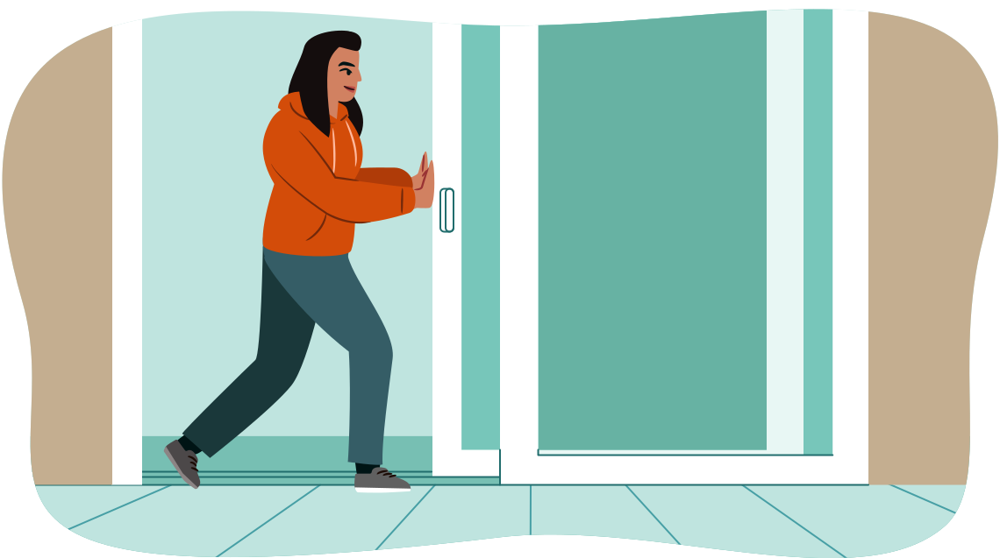
공이 아래로 떨어지는 경우, 공은 땅 쪽으로 당겨지고 있습니다. 공에 작용하는 힘은 지구의 중력(gravitational pull)에 의한 것입니다. 여러분과 문 사이처럼 공과 지구 사이에 물리적 접촉은 없습니다.
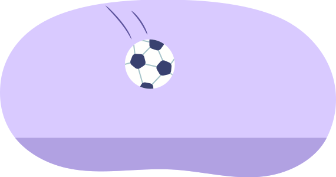
이 두 가지 예시는 두 가지 유형의 힘을 보여줍니다: 접촉력(contact force)과 원격력(action-at-a-distance force)입니다.
힘의 종류
다음의 접촉력과 원격력을 살펴보세요. 다른 힘들도 생각할 수 있으며, 어떤 범주에 속하는지 생각해 보세요.
힘의 정량화
물리학자들이 힘을 나타내는 데 사용하는 기호는 으로 씁니다. 기호 위의 벡터 화살표에 주목하세요. 힘은 벡터(vector)량이므로, 크기(값)와 방향으로 설명됩니다. 분석 중인 힘의 종류를 나타내기 위해 아래 첨자가 종종 사용됩니다. 다음은 기호 목록입니다.힘의 단위
힘의 단위는 뉴턴(N)이라 하며, 킬로그램, 미터, 초의 조합입니다. 기호 N으로 표시되는 뉴턴은 1.0 kg의 물체를 1.0 m/s2로 가속시키는 데 필요한 힘의 양입니다.
질량 대 무게
물리학에서 흔히 잘못 사용되는 두 가지 용어는 질량과 무게입니다.
질량
질량은 킬로그램(kg)과 그램(g)으로 측정됩니다. 이것은 물체에 있는 "물질"(또는 물질(matter))의 양을 나타냅니다. 저울(예: 삼중 빔 저울)로 측정합니다.
질량을 생각하는 또 다른 방법은 물체의 관성(운동 변화에 대한 저항)의 척도입니다. 질량이 클수록 현재의 운동 경로에서 가속되거나 이동하는 것에 더 많이 저항합니다.
참고: 1 kg = 1,000 g 또는 1 g = 0.001 kg
무게
무게는 물체를 아래로 당기는 중력을 말합니다. 힘이므로 뉴턴(N)으로 측정됩니다. 저울(예: 용수철 저울 또는 체중계)로 측정합니다.
직접 해보기!
다음 활동에서 용수철 저울을 나타내는 시뮬레이션을 사용하여 다른 행성의 중력이 무게 측정에 미치는 영향을 탐구할 것입니다. 용수철 저울은 아래쪽 끝에 고리가 달린 작은 용수철이 있는 장비입니다. 용수철을 늘리려면 힘이 필요합니다. 힘의 양은 용수철에 장착된 눈금으로 측정할 수 있습니다. 물체가 고리에 매달리면 중력이 아래쪽으로 힘을 가하고 용수철이 늘어납니다.
물체의 무게는 그것에 작용하는 중력에 따라 달라집니다.
지시사항:
각 용수철 저울에 같은 질량을 추가한 다음, 중력이 다른 표면(지구, 달, 목성)을 선택하여 주어진 질량의 무게가 어떻게 변하는지 살펴보세요.
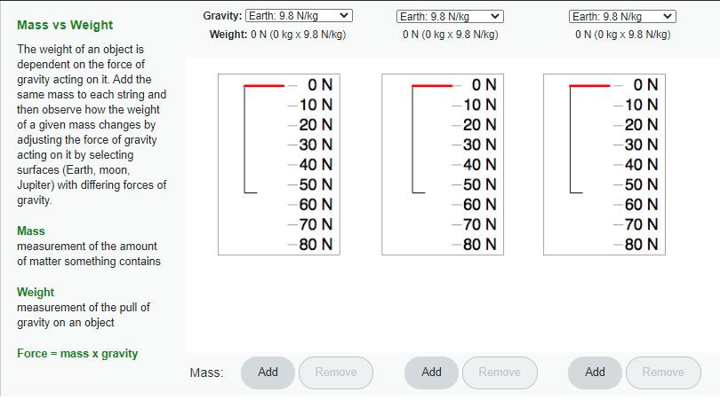
시작 (새 창에서 열림)지구에서 1.0 kg 질량을 용수철에 매달면 아래쪽으로 9.8 N의 힘이 측정됩니다. 두 개의 1.0 kg 질량을 매달면 다음 그림과 같이 용수철은 19.6 N의 힘을 기록합니다.
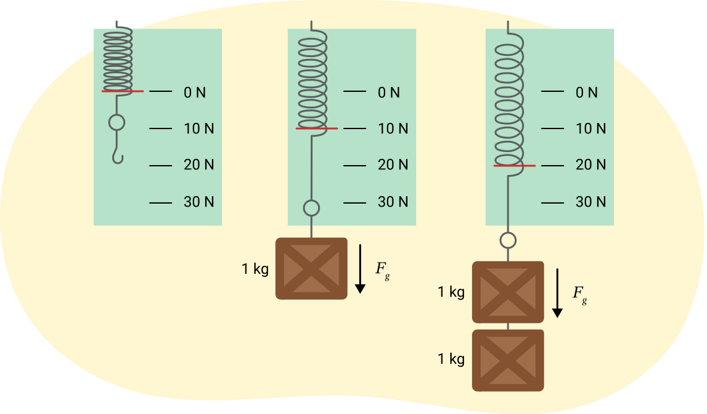
각 경우의 힘은 질량을 아래로 당기는 중력(Fg)입니다. 지구 표면에서 중력은 각 kg의 질량에 9.8 N의 아래쪽 힘을 가합니다. g는 중력 가속도(acceleration due to gravity)임에 유의하세요.
따라서, 지구 표면에서 중력(무게)은 다음 공식을 사용하여 측정할 수 있습니다:
공식
중력
예제: 중력(무게)
지구 표면에서 질량이 50.0 kg인 사람에게 작용하는 중력(무게)은 얼마입니까?
지구 표면에서 1 g 질량에 작용하는 중력은 얼마입니까?
용수철 저울과 1 kg 질량을 달의 표면으로 가져가면, 질량은 변하지 않지만(여전히 같은 양의 물질이 들어 있으므로) 중력(무게)은 달라질 것입니다. 달 표면에서는 1 kg 질량을 매달았을 때 저울이 1.6 N만 표시합니다.
달에서 예제에서처럼 490 N의 무게를 가진 50 kg의 사람은 80 N밖에 나가지 않을 것입니다. 50 kg × 1.6 N/kg [아래] = 80 N [아래].
직접 해보기!
중력 공식을 사용하여 왼쪽 열의 질량을 오른쪽 열의 지구에서의 무게와 짝지으세요.
자유 물체 도표
이것들은 모두 외력의 예입니다 - 물체의 외부에 작용하는 힘입니다. 이러한 시나리오는 자유 물체 도표에서 벡터를 사용하여 나타낼 수 있습니다. 물체는 크기나 모양에 관계없이 기하학적 도형으로 표현됩니다: 상자, 원, 또는 점(물체의 질량 중심 또는 균형점을 상징)으로 나타냅니다.
옆의 이미지에서 새집이 밧줄로 나무에 매달려 있습니다.
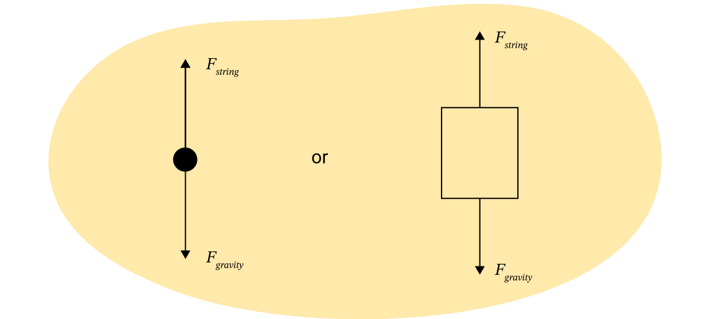
노트
노트에 새집의 자유 물체 도표를 만드는 단계를 따르세요.
1. 다음 그림과 같이 분석할 물체를 나타내는 점 또는 상자를 만드세요. 이 경우 새집에 작용하는 힘을 분석할 것입니다.
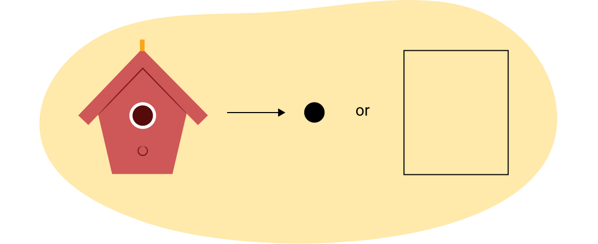
2. 물체에 작용하는 힘을 식별하세요. 힘의 방향으로 화살표를 만드세요. 다음 그림은 이 경우를 나타내며, 아래쪽으로 당기는 힘(중력)과 위쪽으로 당기는 힘(장력(또는 줄의 힘))이 있습니다. 그린 화살표는 힘의 크기에 비례해야 합니다. 새집은 중력과 같은 크기의 장력(Fstring)을 받고 있으므로, 두 화살표는 거의 같은 크기여야 합니다.
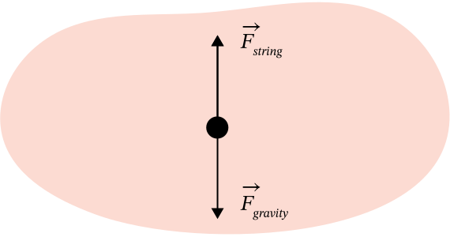
3. 힘의 값이 주어지거나 알려진 경우, 도표에 추가할 수 있습니다.
힘을 만드는 것은 표시하지 않고 - 힘의 방향, 크기, 그리고 힘이 작용하는 물체만 표시한다는 점에 유의하세요.
예제: 자유 물체 도표
때로는 다른 시점에서 물체의 자유 물체 도표(FBD)를 만드는 것이 유용합니다. 예를 들어, 물체가 바닥을 가로질러 끌려가고 있다면, 두 가지 관점이 표시될 수 있습니다: 측면과 위(조감도)에서 본 것입니다.
상자가 왼쪽으로 8 N, 오른쪽으로 8 N으로 당겨지는 경우, 위에서 본 FBD는 다음과 같습니다:
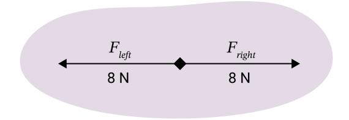
직접 해보기!
상자가 거친 표면 위에서 동쪽으로 밀리고 있습니다. 다음 이미지를 사용하여 올바른 FBD를 선택하여 이해도를 확인하세요.
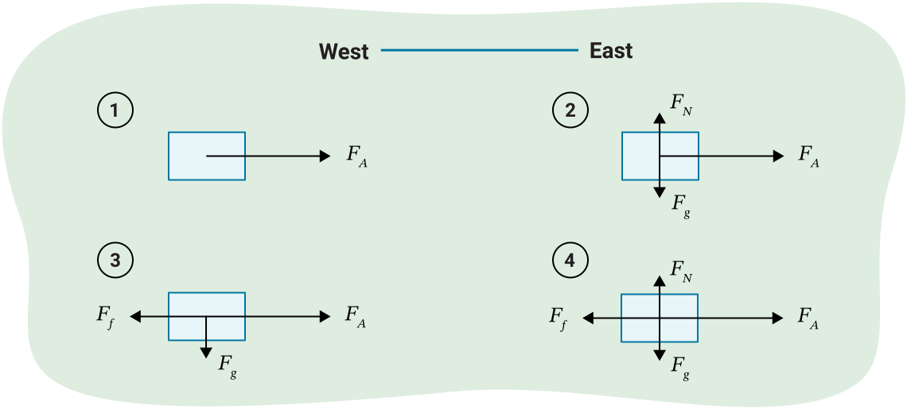
알짜힘
물체에 작용하는 알짜힘(net force, 합력)은 모든 힘의 벡터 합(총합)입니다.
물체에는 종종 하나 이상의 힘이 작용합니다. 운동장에서 두 명의 친구가 각각 여러분의 양팔을 반대 방향으로 당기는 놀이를 해본 적이 있습니까? 때로는 어디로도 움직이지 않았습니다. 다른 때에는 한 친구 쪽으로 움직였습니다.
여러분의 몸에 작용하는 수평 방향의 힘을 생각해 보세요. 다음 그림에서 점은 양팔이 당겨지는 사람을 나타내고, 왼쪽과 오른쪽 화살표(Fleft와 Fright)는 친구들을 나타냅니다.
다음 그림은 두 친구가 같은 크기의 힘으로 당기는 시나리오를 나타냅니다.
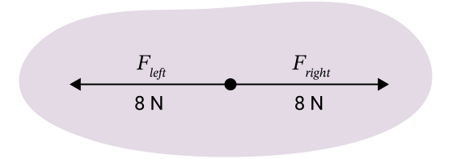
[오른쪽]을 양의 방향으로 합시다.
다음 그림은 친구들로부터 불균형한 힘이 작용하는 시나리오를 나타냅니다:
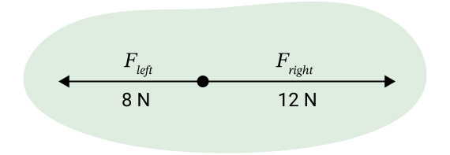
첫 번째 시나리오(그림 A)에서는 알짜힘이 0이므로 전혀 움직이지 않았을 것입니다. 두 번째 시나리오(그림 B)에서는 알짜힘이 오른쪽으로 4 N이므로 오른쪽으로 움직였을 것입니다.
다음 학습 활동에서 운동과 힘에 대해 더 자세히 배울 것입니다. 이것은 뉴턴의 운동 법칙에서 더 자세히 설명됩니다.
운동과 힘에 대한 초기 개념
Aristotle을 포함한 여러 초기 철학자들은 밀거나 당기지 않는 물체(정지 상태의 물체)의 운동을 설명하려고 했습니다. Aristotle의 이론은 한 번도 검증하지 않았음에도 불구하고 2000년 이상 널리 받아들여졌습니다.
Galileo
외부 힘이 작용하지 않는 한 물체가 운동 상태(정지 상태 또는 등속 상태)를 유지한다는 생각은 물리학자 Galileo Galilei에 의해 확인되었습니다. Galileo가 과학에 기여한 수많은 공헌 중 하나는 이론이 참인지 거짓인지 결정하기 위해 검증되어야 한다는 생각이었습니다. 이러한 이유로 Galileo는 종종 근대 과학의 창시자 중 한 명으로 여겨집니다.
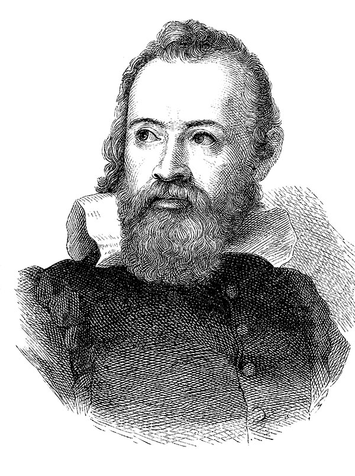
Galileo의 운동에 대한 생각
외부 힘이 작용하지 않는 한 물체가 운동 상태를 유지하려는 Galileo의 혁명적인 생각은 중요한 것입니다.
이 생각은 직관적으로 보일 수 있습니다. 예를 들어, 물체가 정지해 있으면 무한정 정지 상태를 유지할 것이라고 가정할 것입니다.
그러나 움직이는 물체의 경우, 물체가 계속 움직이려면 힘이 작용해야 한다는 널리 퍼진 오해가 있습니다. 이것이 항상 맞는 것은 아닙니다.
예를 들어, 마찰이 없는 표면을 굴러 내려와 마찰이 없는 수평면 위를 구르는 공을 생각해 보세요. 공은 지구가 당기는 중력 때문에 경사면을 굴러 내려갑니다. 중력은 수직 방향의 힘임을 기억하세요. 공이 수평면에 도달하면 알짜힘이 더 이상 작용하지 않지만 계속 굴러갑니다. 공을 느리게 할 것이 아무것도 없습니다!
다음은 평평한 표면 위를 굴러가는 공의 자유 물체 도표입니다:
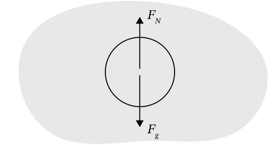
참고: 수평 방향의 힘은 없습니다(마찰이 없는 표면임을 기억하세요). 작용하는 유일한 힘은 수직 항력과 중력입니다. 이 공은 수평 방향으로 알짜힘이 없으므로 같은 방식으로 계속 움직일 것입니다. 즉, 공은 관성으로 인해 운동 상태(즉, 등속도로 이동)를 유지합니다.
관성(inertia)은 물체가 운동 변화에 저항하는 경향입니다.
공에 마찰력이 작용하면(대부분의 경우에 그러하듯이) 시나리오가 달라집니다.
자유 물체 도표는 다음과 같이 기록됩니다:
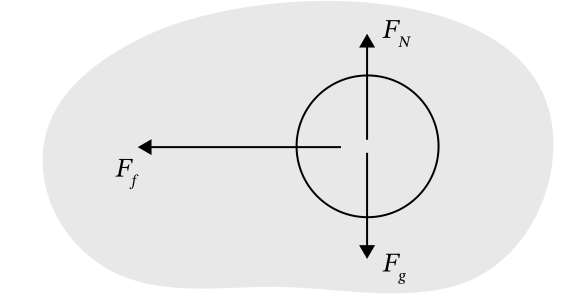
수평 방향에 불균형한 힘이 있음에 주목하세요. 실제로 이 힘은 공을 느리게 합니다. 따라서 외부 힘(마찰력)이 작용하고 있으므로 운동 상태에 변화가 있습니다. 이것이 이러한 사고방식을 받아들이기 어렵게 만든 측면 중 하나입니다. 현실에서 거의 모든 운동은 마찰을 경험하므로, 사람들은 운동의 자연적인 경향이 멈추는 것이라고 생각했을 수 있습니다.
운동 상태
버스 운전사가 예상치 못하게 브레이크를 밟았을 때 몸이 휘청인 적이 있습니까? 코너를 돌거나 갑자기 멈출 때 차 안에서 식료품이 굴러다닌 적이 있습니까? 스키 점프를 할 때 스키 점퍼가 바로 땅으로 떨어지지 않고 공중으로 날아오르는 것처럼 보이는 이유는 무엇입니까? 놀이공원 놀이기구를 탈 때 무중력을 느낀 적이 있습니까?
이 학습 활동에서 이와 같은 상황을 살펴보고 뉴턴의 제1법칙을 사용하여 설명하는 방법을 배울 것입니다.
다음 그림은 관성의 두 가지 예를 보여줍니다. 경사면 위의 수레에 있는 공들은 경사면 끝에서도 계속 운동 상태를 유지합니다. 두 번째 예에서는 물이 담긴 유리잔 위에 놓인 종이 위에 동전이 올려져 있습니다. 종이를 제거하면 동전은 정지 상태를 유지하므로 유리잔 안으로 떨어지게 됩니다.
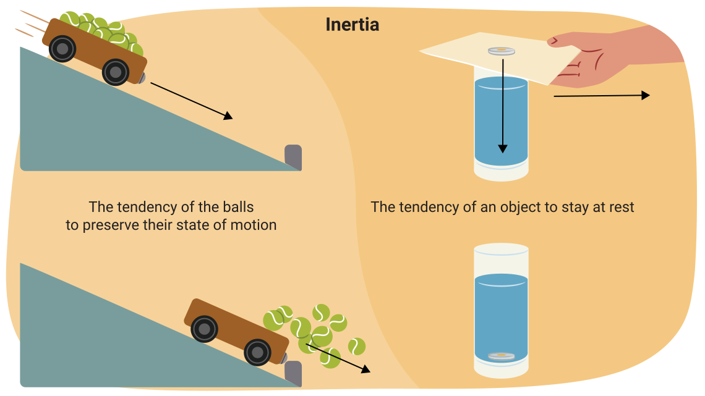
자동차와 같은 무거운 물체는 공과 같은 작은 물체보다 관성이 더 큽니다. 따라서 공을 밀어 정지 상태에서 운동 상태로 바꾸는 것은 쉽지만, 자동차를 밀어 움직이게 하는 것은 훨씬 어렵습니다. 마찬가지로 움직이는 자동차를 멈추는 것은 상당히 어렵지만, 움직이는 공을 멈추는 것은 매우 쉽습니다. 질량이 클수록 관성도 커집니다.
노트
노트를 사용하여 다음 각 질문을 완료할 수 있습니다. 자신의 풀이를 예시 답안과 비교하여 이해도를 확인하세요.
1. 하키 선수가 거친 얼음 표면 위에서 팀원에게 퍽을 패스합니다.
a) 스틱이 힘을 가하는 동안 얼음 위 퍽의 자유 물체 도표를 그리세요.
다음 자유 물체 도표에는 퍽에 작용하는 네 가지 힘이 있습니다: 적용된 힘, 마찰력, 수직 항력, 중력.
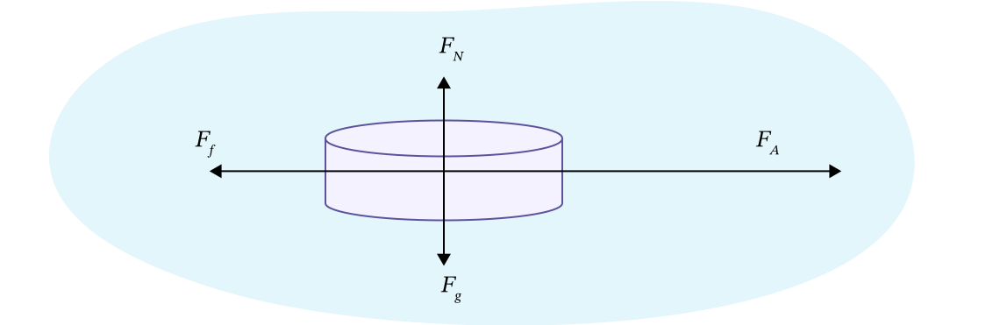
b) 얼음 표면 위를 미끄러지는 퍽의 자유 물체 도표를 그리세요.
다음 자유 물체 도표에는 퍽에 작용하는 세 가지 힘이 있습니다: 마찰력, 수직 항력, 중력.
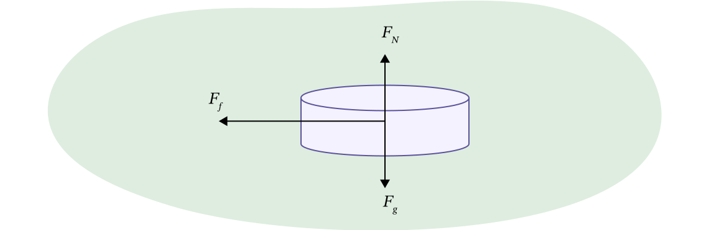
활동
검지 손가락 위에 카드를 올려놓으세요. 카드 중앙에 동전을 올려놓아 손가락 끝에서 균형을 잡으세요. 다른 손으로 카드를 튕겨 날려 보세요. 동전에 무슨 일이 일어납니까? 동전이 손가락 위에 남도록 할 수 있습니까?
탐구해 보기!
또는 같은 시연을 하는 다음 영상을 살펴보세요.
이것이 왜 작동하는지 생각해 보세요.
동전은 관성으로 인해 정지 상태를 유지합니다. 카드를 빠르게 제거하면 동전은 손가락 위에 남아 있게 됩니다.
이것은 마술사가 테이블 위의 접시 밑에서 식탁보를 빠르게 잡아당기는 것과 매우 비슷합니다. 이것은 접시가 무겁고 식탁보를 매우 빠르게 당길 때 가장 잘 작동합니다. 접시의 관성이 식탁보가 당겨지는 동안 접시를 제자리에 유지합니다.
탐구해 보기!
다음 영상은 접시가 올려진 식탁보를 당기는 시연입니다.
다음 영상 클립을 살펴보고 관성을 사용하여 달걀에 무슨 일이 일어나는지 설명해 보세요.
이것이 왜 작동하는지 생각해 보세요.
달걀은 정지 상태에 있으며 관성 때문에 정지 상태를 유지하려고 합니다. 달걀 아래의 통이 빠지면 달걀은 공중에서 정지 상태를 유지할 수 없으므로 아래로 곧장 떨어집니다.
예제: 곡선 도로
다음 그림은 자동차가 우회전하는 것을 위에서 본 것입니다. 자동차의 방향이 변합니다(검은 실선 화살표로 표시). 대시보드 위에 상자(빨간 직사각형으로 표시)가 있습니다. 회전하는 동안 상자의 관성은 원래 방향으로 계속 이동하게 하여 대시보드의 왼쪽으로 미끄러집니다. 자동차 안의 승객에게도 같은 일이 일어납니다. 안전벨트가 승객을 자동차와 그 운동의 일부로 만들어주기 때문에 승객은 그만큼 미끄러지지 않습니다.
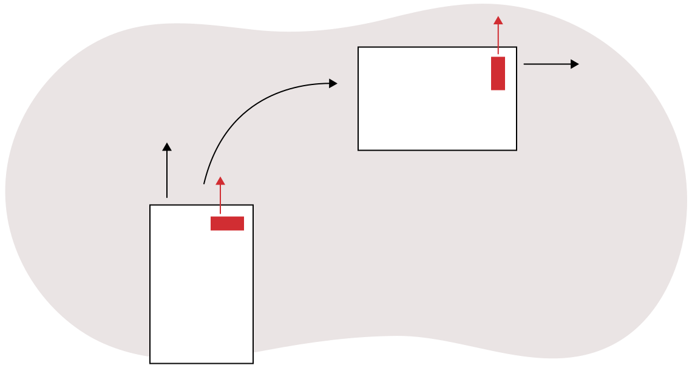
요약: 관성
이것은 무엇을 의미합니까?
- 정지한 물체는 정지 상태를 유지하려는 경향이 있습니다.
- 운동 중인 물체는 운동 상태를 유지하려는 경향이 있습니다.
- 물체의 속도가 일정하면 알짜 외력은 0이어야 합니다.
- 물체가 가속하고 있다면, 0이 아닌 알짜 외력에 의한 것이어야 합니다.
Sir Isaac Newton
Sir Isaac Newton은 Galileo의 관성에 대한 생각을 수정하고 확장했으며, 더 근본적인 법칙도 개발하게 됩니다.
이전의 모든 예시는 뉴턴의 제1운동법칙의 적용입니다.
뉴턴의 제1운동법칙
뉴턴의 제1법칙
물체에 작용하는 알짜힘이 0이면(알짜힘 없음), 물체는 정지 상태 또는 직선으로 등속도 운동 상태를 유지합니다.
스케이트보드가 콘크리트 장벽에 의해 갑자기 멈춘 후 공중으로 날아가는 스케이트보더의 이 사진은 뉴턴의 제1법칙을 명확히 보여줍니다:
스케이트보더가 스케이트보드 위에서 타고 있을 때, 스케이트보더는 스케이트보드와 같은 속도로 움직이고 있었습니다. 장벽은 스케이트보드의 운동을 멈추는 힘으로 작용했지만, 스케이트보더에게는 외부 힘이 작용하지 않았습니다. 스케이트보더는 스케이트보드에 단단히 부착되어 있지 않았으므로, 원래 속도로 앞으로 계속 움직였습니다.
물체에 알짜힘이 작용하지 않으면, 물체는 정지 상태 또는 직선으로 등속도 운동 상태를 유지합니다.
뉴턴의 제1법칙은 이전 학습 활동에서 배운 관성의 개념을 설명하므로 관성의 법칙(Law of Inertia)이라고도 합니다.
내부 힘은 물체의 외부 운동에 변화를 일으키지 않습니다. 예를 들어, 버스에 탄 사람이 앞 좌석을 밀어도 버스의 운동에는 영향을 미치지 않습니다.
노트
노트를 사용하여 다음 각 질문을 완료할 수 있습니다. 자신의 풀이를 예시 답안과 비교하여 이해도를 확인하세요.
뉴턴의 제1법칙이 다음 각 상황에 어떻게 적용되는지 설명하세요:
1. 토보건 위의 두 청소년이 토보건을 세게 잡아당기면 뒤로 넘어집니다. 설명하세요.
청소년들의 관성은 토보건을 앞으로 당기는 힘이 가해져도 정지 상태를 유지하게 합니다. 토보건을 당기는 힘은 아이에게 작용하지 않으므로, 토보건이 당겨질 때 아이는 정지 상태를 유지하고 토보건 위에서 뒤로 미끄러집니다.
2. 한 사람이 썰매를 타고 언덕을 내려갑니다. 눈더미를 치고 썰매는 거기에 박히지만, 사람은 방수 바지를 입고 언덕을 계속 내려갑니다. 설명하세요.
사람은 썰매와 같은 속도로 움직이고 있습니다. 썰매가 멈추면 사람은 같은 속도로 계속 움직입니다. 썰매를 멈추는 힘은 사람에게 작용하지 않으므로, 관성으로 인해 계속 움직입니다.
3. 트럭 적재함에 놓인 상자가 운전자가 신호등에서 출발할 때 트럭 뒤쪽으로 미끄러집니다. 설명하세요.
상자는 정지 상태에 있습니다. 트럭이 앞으로 가속하면, 마찰력이 충분하지 않으면 상자는 정지 상태를 유지하므로 뒤로 움직이는 것처럼 보입니다. 트럭에 작용하는 힘은 상자가 트럭에 부착되어 있지 않으므로 상자에 작용하지 않습니다.
4. Amena는 눈삽을 세게 뒤로 잡아당겨 눈을 털어냅니다. 설명하세요.
Amena가 눈을 버리기 위해 삽을 앞으로 움직이면, 눈은 삽과 같은 속도로 이동합니다. 그러나 Amena가 삽을 세게 뒤로 당기면 눈은 앞으로 계속 갑니다. Amena는 눈에 힘을 가하지 않고 삽에만 힘을 가합니다.

이제 학습 활동 시작 부분에서 제시된 질문에 대한 답을 배웠을 것입니다.
질량과 무게의 개념이 얼마나 다른지 놀랐습니까? 하지만 두 용어가 같은 의미로 사용되는 것을 자주 볼 수 있습니다. 물리학에서 이 둘은 매우 다른 것을 의미합니다.
직접 해보기!
이해도를 확인하기 위해 다음 질문을 풀어보세요.
안전을 위한 지식 연결
물리학에서 매우 중요한 개념인 관성에 대해서도 배웠습니다.
이 학습 활동을 마무리하기 위해, 배운 것을 일상생활에 적용해 봅시다.
노트
노트에 다음 적용 사례가 일상생활에서 왜 중요한지, 그리고 관성이 어떻게 관련되는지 설명하세요.
관성의 개념을 사용하여:
- 자동차에서 안전벨트의 필요성을 설명하세요.
- 자동차에서 머리 받침대의 필요성을 설명하세요.
- 무거운 짐을 실은 대형 자동차가 코너를 천천히 돌아야 하는 이유를 설명하세요.
복습
어휘 복습: 이 학습 활동과 관련된 단어의 정의를 확인하세요. 힘과 뉴턴의 운동 법칙에 대해 배운 내용의 맥락에서 그 단어들을 사용하는 문단을 추가하세요.
자기 점검 퀴즈
이해도를 확인하세요!
다음 자기 점검 퀴즈를 완료하여 학습 진행 상황과 집중해야 할 영역을 파악하세요.
이 퀴즈는 피드백 목적으로만 사용되며, 성적에 포함되지 않습니다. 이 퀴즈는 무제한으로 시도할 수 있습니다. 충분한 시간을 가지고, 최선을 다하며, 제공된 피드백을 되돌아보세요.
퀴즈를 눌러 이 도구에 접속하세요.